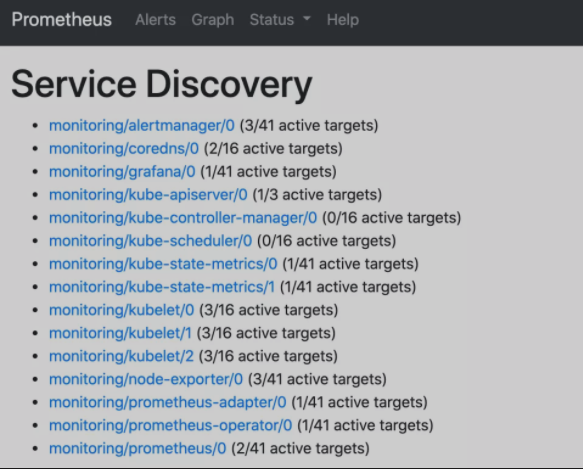
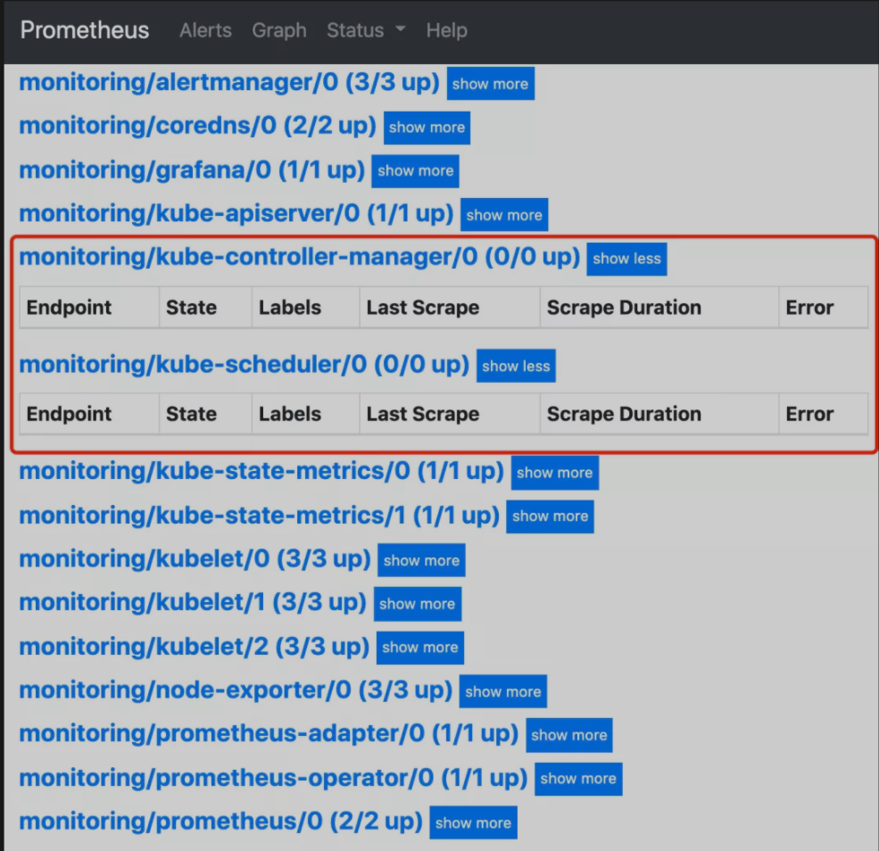
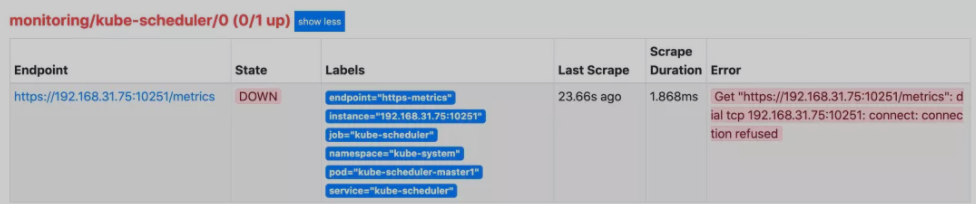
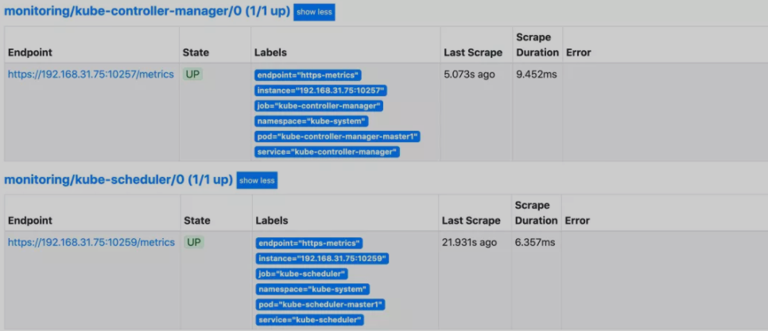
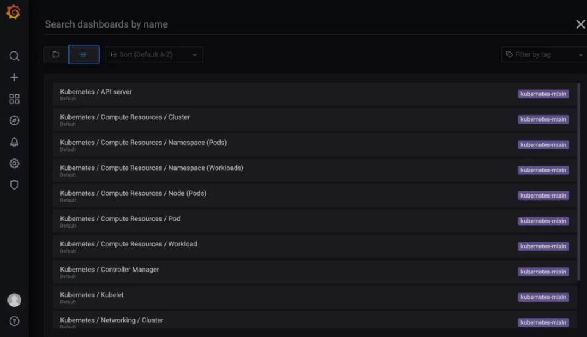
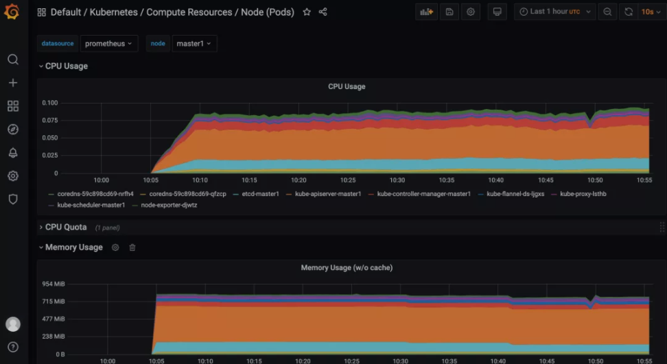

第九节 Prometheus Operator安装配置(2021)
但实际上对上 Kubernetes 来说，还有更简单方式来监控报警，那就是 Prometheus Operator(https://prometheus-operator.dev/)。
Prometheus Operator 为监控 Kubernetes 资源和 Prometheus 实例的管理提供了简单的定义，简化在 Kubernetes 上部署、管理和运行 Prometheus 和 Alertmanager 集群。
1 介绍
Prometheus Operator 为 Kubernetes 提供了对 Prometheus 机器相关监控组件的本地部署和管理方案，该项目的目的是为了简化和自动化基于 Prometheus 的监控栈配置，主要包括以下几个功能：
- Kubernetes 自定义资源：使用 Kubernetes CRD 来部署和管理 Prometheus、Alertmanager 和相关组件。
- 简化的部署配置：直接通过 Kubernetes 资源清单配置 Prometheus，比如版本、持久化、副本、保留策略等等配置。
- Prometheus 监控目标配置：基于熟知的 Kubernetes 标签查询自动生成监控目标配置，无需学习 Prometheus 特地的配置。
首先我们先来了解下 Prometheus Operator 的架构图：

上图是 Prometheus-Operator 官方提供的架构图，各组件以不同的方式运行在 Kubernetes 集群中，其中 Operator 是最核心的部分，作为一个控制器，他会去创建 Prometheus、ServiceMonitor、AlertManager 以及 PrometheusRule 等 CRD 资源对象，然后会一直 Watch 并维持这些资源对象的状态。
在最新版本的 Operator 中提供了以下几个 CRD 资源对象：
- Prometheus
- Alertmanager
- ServiceMonitor
- PodMonitor
- Probe
- ThanosRuler
- PrometheusRule
- AlertmanagerConfig
1-1 Prometheus
该 CRD 声明定义了 Prometheus 期望在 Kubernetes 集群中运行的配置，提供了配置选项来配置副本、持久化、报警实例等。
对于每个 Prometheus CRD 资源，Operator 都会以 StatefulSet 形式在相同的命名空间下部署对应配置的资源，Prometheus Pod 的配置是通过一个包含 Prometheus 配置的名为 <prometheus-name> 的 Secret 对象声明挂载的。
该 CRD 根据标签选择来指定部署的 Prometheus 实例应该覆盖哪些 ServiceMonitor，然后 Operator 会根据包含的 ServiceMonitors 生成配置，并在包含配置的 Secret 中进行更新。
如果未提供对 ServiceMonitor 的选择，则 Operator 会将 Secret 的管理留给用户，这样就可以提供自定义配置，同时还能享受 Operator 管理 Operator 的设置能力。
1-2 Alertmanager
该 CRD 定义了在 Kubernetes 集群中运行的 Alertmanager 的配置，同样提供了多种配置，包括持久化存储。
对于每个 Alertmanager 资源，Operator 都会在相同的命名空间中部署一个对应配置的 StatefulSet，Alertmanager Pods 被配置为包含一个名为 <alertmanager-name> 的 Secret，该 Secret 以 alertmanager.yaml 为 key 的方式保存使用的配置文件。
当有两个或更多配置的副本时，Operator 会在高可用模式下运行 Alertmanager 实例。
1-3 ThanosRuler
该 CRD 定义了一个 Thanos Ruler 组件的配置，以方便在 Kubernetes 集群中运行。通过 Thanos Ruler，可以跨多个Prometheus 实例处理记录和警报规则。
一个 ThanosRuler 实例至少需要一个 queryEndpoint，它指向 Thanos Queriers 或 Prometheus 实例的位置。queryEndpoints 用于配置 Thanos 运行时的 --query 参数，更多信息也可以在 Thanos 文档中找到。
1-4 ServiceMonitor
该 CRD 定义了如何监控一组动态的服务，使用标签选择来定义哪些 Service 被选择进行监控。这可以让团队制定一个如何暴露监控指标的规范，然后按照这些规范自动发现新的服务，而无需重新配置。
为了让 Prometheus 监控 Kubernetes 内的任何应用，需要存在一个 Endpoints 对象，Endpoints 对象本质上是IP地址的列表，通常 Endpoints 对象是由 Service 对象来自动填充的，Service 对象通过标签选择器匹配 Pod，并将其添加到Endpoints 对象中。
一个 Service 可以暴露一个或多个端口，这些端口由多个 Endpoints 列表支持，这些端点一般情况下都是指向一个 Pod。
Prometheus Operator 引入的这个 ServiceMonitor 对象就会发现这些 Endpoints 对象，并配置 Prometheus 监控这些 Pod。ServiceMonitorSpec 的 endpoints 部分就是用于配置这些 Endpoints 的哪些端口将被 scrape 指标的。
注意：endpoints（小写）是 ServiceMonitor CRD 中的字段，而 Endpoints（大写）是 Kubernetes 的一种对象。
ServiceMonitors 以及被发现的目标都可以来自任何命名空间，这对于允许跨命名空间监控的场景非常重要。
使用 PrometheusSpec 的 ServiceMonitorNamespaceSelector，可以限制各自的 Prometheus 服务器选择的 ServiceMonitors 的命名空间。
使用 ServiceMonitorSpec 的 namespaceSelector，可以限制 Endpoints 对象被允许从哪些命名空间中发现，要在所有命名空间中发现目标，namespaceSelector 必须为空：
spec:
namespaceSelector:
any: true
1-5 PodMonitor
该 CRD 用于定义如何监控一组动态 pods，使用标签选择来定义哪些 pods 被选择进行监控。同样团队中可以制定一些规范来暴露监控的指标。
Pod 是一个或多个容器的集合，可以在一些端口上暴露Prometheus指标。
由 Prometheus Operator 引入的 PodMonitor 对象会发现这些 Pod，并为 Prometheus 服务器生成相关配置，以便监控它们。
PodMonitorSpec 中的 PodMetricsEndpoints 部分，用于配置 Pod 的哪些端口将被 scrape 指标，以及使用哪些参数。
PodMonitors 和发现的目标可以来自任何命名空间，这同样对于允许跨命名空间的监控用例是很重要的。使用 PodMonitorSpec 的 namespaceSelector，可以限制 Pod 被允许发现的命名空间，要在所有命名空间中发现目标，namespaceSelector 必须为空：
spec:
namespaceSelector:
any: true
PodMonitor 和 ServieMonitor 最大的区别就是不需要有对应的 Service。
1-6 Probe
该 CRD 用于定义如何监控一组 Ingress 和静态目标。除了 target 之外，Probe 对象还需要一个 prober，它是监控的目标并为 Prometheus 提供指标的服务。例如可以通过使用 blackbox-exporter 来提供这个服务。
1-7 PrometheusRule
用于配置 Prometheus 的 Rule 规则文件，包括 recording rules 和 alerting，可以自动被 Prometheus 加载。
1-8 AlertmanagerConfig
在以前的版本中要配置 Alertmanager 都是通过 Configmap 来完成的，在 v0.43 版本后新增该 CRD，可以将 Alertmanager 的配置分割成不同的子对象进行配置，允许将报警路由到自定义 Receiver 上，并配置抑制规则。
AlertmanagerConfig 可以在命名空间级别上定义，为 Alertmanager 提供一个聚合的配置。这里提供了一个如何使用它的例子。不过需要注意这个 CRD 还不稳定。
这样我们要在集群中监控什么数据，就变成了直接去操作 Kubernetes 集群的资源对象了，是这样比之前手动的方式就方便很多了。
2 安装
为了使用 Prometheus-Operator，这里我们直接使用 kube-prometheus 这个项目来进行安装，该项目和 Prometheus-Operator 的区别就类似于 Linux 内核和 CentOS/Ubuntu 这些发行版的关系，真正起作用的是 Operator 去实现的，而 kube-prometheus 只是利用 Operator 编写了一系列常用的监控资源清单。
首先 clone 项目代码，切换到当前最新的 v0.7.0 版本：
$ git clone https://github.com/prometheus-operator/kube-prometheus.git
$ cd kube-prometheus && git checkout v0.7.0
首先创建需要的命名空间和 CRDs，等待它们可用后再创建其余资源：
$ kubectl apply -f manifests/setup
$ until kubectl get servicemonitors --all-namespaces ; do date; sleep 1; echo ""; done
$ kubectl apply -f manifests/
进入到 manifests 目录下面，首先我们需要安装 setup 目录下面的 CRD 和 Operator资源对象，等待它们可用后再创建其余资源：
$ kubectl apply -f setup/
$ kubectl get pods -n monitoring
NAME READY STATUS RESTARTS AGE
prometheus-operator-7649c7454f-wqtx7 2/2 Running 0 2m42s
这会创建一个名为 monitoring的命名空间，以及相关的 CRD 资源对象声明和 Prometheus Operator 控制器。
前面章节中我们讲解过 CRD 和 Operator 的使用，当我们声明完 CRD 过后，就可以来自定义资源清单了，但是要让我们声明的自定义资源对象生效就需要安装对应的 Operator 控制器，这里我们都已经安装了，所以接下来就可以来用 CRD 创建真正的自定义资源对象了。
在 manifests 目录下面的就是我们要去创建的 Prometheus、Alertmanager 以及各种监控对象的资源清单，直接安装即可：
$ kubectl apply -f manifests/
这会自动安装 node-exporter、kube-state-metrics、grafana、prometheus-adapter 以及 prometheus 和 alertmanager 等大量组件，而且 prometheus 和 alertmanager 还是多副本的。
$ kubectl get pods -n monitoring
NAME READY STATUS RESTARTS AGE
alertmanager-main-0 2/2 Running 0 12m
alertmanager-main-1 2/2 Running 0 12m
alertmanager-main-2 2/2 Running 0 12m
grafana-f8cd57fcf-kbnsj 1/1 Running 0 12m
kube-state-metrics-587bfd4f97-pwk5p 3/3 Running 0 12m
node-exporter-djwtz 2/2 Running 0 12m
node-exporter-k7zl9 2/2 Running 0 12m
node-exporter-rlnjt 2/2 Running 0 12m
prometheus-adapter-69b8496df6-vq7bl 1/1 Running 0 12m
prometheus-k8s-0 2/2 Running 0 12m
prometheus-k8s-1 1/2 Running 0 12m
prometheus-operator-7649c7454f-wqtx7 2/2 Running 0 16m
$ kubectl get svc -n monitoring
NAME TYPE CLUSTER-IP EXTERNAL-IP PORT(S) AGE
alertmanager-main ClusterIP 10.104.5.112 <none> 9093/TCP 4m58s
alertmanager-operated ClusterIP None <none> 9093/TCP,9094/TCP,9094/UDP 4m58s
grafana ClusterIP 10.107.173.231 <none> 3000/TCP 4m52s
kube-state-metrics ClusterIP None <none> 8443/TCP,9443/TCP 4m51s
node-exporter ClusterIP None <none> 9100/TCP 4m51s
prometheus-adapter ClusterIP 10.104.205.68 <none> 443/TCP 4m50s
prometheus-k8s ClusterIP 10.105.168.183 <none> 9090/TCP 4m49s
prometheus-operated ClusterIP None <none> 9090/TCP 4m50s
prometheus-operator ClusterIP None <none> 8443/TCP
可以看到上面针对 grafana、alertmanager 和 prometheus 都创建了一个类型为 ClusterIP 的 Service，当然如果我们想要在外网访问这两个服务的话可以通过创建对应的 Ingress 对象或者使用 NodePort 类型的 Service，
我们这里为了简单，直接使用 NodePort 类型的服务即可，编辑 grafana、alertmanager-main 和 prometheus-k8s 这3个 Service，将服务类型更改为 NodePort:
# 将 type: ClusterIP 更改为 type: NodePort
$ kubectl edit svc grafana -n monitoring
$ kubectl edit svc alertmanager-main -n monitoring
$ kubectl edit svc prometheus-k8s -n monitoring
$ kubectl get svc -n monitoring
NAME TYPE CLUSTER-IP EXTERNAL-IP PORT(S) AGE
alertmanager-main NodePort 10.111.28.173 <none> 9093:30733/TCP 18m
grafana NodePort 10.99.62.32 <none> 3000:32150/TCP 17m
prometheus-k8s NodePort 10.111.105.155 <none> 9090:30206/TCP 17m
......
更改完成后，我们就可以通过上面的 NodePort 去访问对应的服务了，比如查看 prometheus 的服务发现页面：

可以看到已经监控上了很多指标数据了，上面我们可以看到 Prometheus 是两个副本，我们这里通过 Service 去访问，按正常来说请求是会去轮询访问后端的两个 Prometheus 实例的，但实际上我们这里访问的时候始终是路由到后端的一个实例上去，因为这里的 Service 在创建的时候添加了 sessionAffinity: ClientIP 这样的属性，会根据 ClientIP 来做 session 亲和性，所以我们不用担心请求会到不同的副本上去：
apiVersion: v1
kind: Service
metadata:
labels:
prometheus: k8s
name: prometheus-k8s
namespace: monitoring
spec:
ports:
- name: web
port: 9090
targetPort: web
selector:
app: prometheus
prometheus: k8s
sessionAffinity: ClientIP
为什么会担心请求会到不同的副本上去呢？正常多副本应该是看成高可用的常用方案，理论上来说不同副本本地的数据是一致的，但是需要注意的是 Prometheus 的主动 Pull 拉取监控指标的方式，由于抓取时间不能完全一致，即使一致也不一定就能保证网络没什么问题，所以最终不同副本下存储的数据很大可能是不一样的，所以这里我们配置了 session 亲和性，可以保证我们在访问数据的时候始终是一致的。
3 配置
我们可以看到上面的监控指标大部分的配置都是正常的，只有两三个没有管理到对应的监控目标，比如 kube-controller-manager 和 kube-scheduler 这两个系统组件。

这其实就和 ServiceMonitor 的定义有关系了，我们先来查看下 kube-scheduler 组件对应的 ServiceMonitor 资源的定义：
# manifests/prometheus-serviceMonitorKubeScheduler.yaml
apiVersion: monitoring.coreos.com/v1
kind: ServiceMonitor
metadata:
labels:
k8s-app: kube-scheduler
name: kube-scheduler
namespace: monitoring
spec:
endpoints:
- bearerTokenFile: /var/run/secrets/kubernetes.io/serviceaccount/token # token 文件
interval: 30s # 每30s获取一次信息
port: https-metrics # 对应 service 的端口名
scheme: https # 注意是使用 https 协议
tlsConfig: # 跳过安全校验
insecureSkipVerify: true
jobLabel: k8s-app # 用于从中检索任务名称的标签
namespaceSelector: # 表示去匹配某一命名空间中的 Service，如果想从所有的namespace中匹配用any:true
matchNames:
- kube-system
selector: # 匹配的 Service 的 labels，如果使用 mathLabels，则下面的所有标签都匹配时才会匹配该 service，如果使用 matchExpressions，则至少匹配一个标签的 service 都会被选择
matchLabels:
k8s-app: kube-scheduler
上面是一个典型的 ServiceMonitor 资源对象的声明方式，上面我们通过 selector.matchLabels 在 kube-system 这个命名空间下面匹配具有 k8s-app=kube-scheduler 这样的 Service，但是我们系统中根本就没有对应的 Service：
$ kubectl get svc -n kube-system -l k8s-app=kube-scheduler
No resources found in kube-system namespace.
所以我们需要去创建一个对应的 Service 对象，才能与 ServiceMonitor 进行关联：
# prometheus-kubeSchedulerService.yaml
apiVersion: v1
kind: Service
metadata:
namespace: kube-system
name: kube-scheduler
labels: # 必须和上面的 ServiceMonitor 下面的 matchLabels 保持一致
k8s-app: kube-scheduler
spec:
selector:
component: kube-scheduler
ports:
- name: https-metrics
port: 10259
targetPort: 10259 # 需要注意现在版本默认的安全端口是10259
其中最重要的是上面 labels 和 selector 部分，labels 区域的配置必须和我们上面的 ServiceMonitor 对象中的 selector 保持一致，selector 下面配置的是 component=kube-scheduler，为什么会是这个 label 标签呢，我们可以去 describe 下 kube-scheduler 这个 Pod：
$ kubectl describe pod kube-scheduler-master1 -n kube-system
Name: kube-scheduler-master1
Namespace: kube-system
Priority: 2000001000
Priority Class Name: system-node-critical
Node: master1/192.168.31.75
Start Time: Mon, 29 Mar 2021 18:15:46 +0800
Labels: component=kube-scheduler
tier=control-plane
......
我们可以看到这个 Pod 具有 component=kube-scheduler 和 tier=control-plane 这两个标签，而前面这个标签具有更唯一的特性，所以使用前面这个标签较好，这样上面创建的 Service 就可以和我们的 Pod 进行关联了，直接创建即可：
$ kubectl apply -f prometheus-kubeSchedulerService.yaml
$ kubectl get svc -n kube-system -l k8s-app=kube-scheduler
NAME TYPE CLUSTER-IP EXTERNAL-IP PORT(S) AGE
kube-scheduler ClusterIP 10.100.66.246 <none> 10251/TCP 2m2s
创建完成后，隔一小会儿后去 Prometheus 页面上查看 targets 下面 kube-scheduler 已经有采集的目标了，但是报了 connect: connection refused 这样的错误：

这是因为 kube-scheduler 启动的时候默认绑定的是 127.0.0.1 地址，所以要通过 IP 地址去访问就被拒绝了，我们可以查看 master 节点上的静态 Pod 资源清单来确认这一点：
# /etc/kubernetes/manifests/kube-scheduler.yaml
apiVersion: v1
kind: Pod
metadata:
creationTimestamp: null
labels:
component: kube-scheduler
tier: control-plane
name: kube-scheduler
namespace: kube-system
spec:
containers:
- command:
- kube-scheduler
- --authentication-kubeconfig=/etc/kubernetes/scheduler.conf
- --authorization-kubeconfig=/etc/kubernetes/scheduler.conf
- --bind-address=127.0.0.1 # 绑定了127.0.0.1
- --kubeconfig=/etc/kubernetes/scheduler.conf
- --leader-elect=true
- --port=0 # 如果为0，则不提供 HTTP 服务，--secure-port 默认值：10259，通过身份验证和授权为 HTTPS 服务的端口，如果为 0，则不提供 HTTPS。
......
我们可以直接将上面的 --bind-address=127.0.0.1 更改为 --bind-address=0.0.0.0 即可，更改后 kube-scheduler 会自动重启，重启完成后再去查看 Prometheus 上面的采集目标就正常了。
可以用同样的方式来修复下 kube-controller-manager 组件的监控，创建一个如下所示的 Service 对象，只是端口改成 10257：
# prometheus-kubeControllerManagerService.yaml
apiVersion: v1
kind: Service
metadata:
namespace: kube-system
name: kube-controller-manager
labels:
k8s-app: kube-controller-manager
spec:
selector:
component: kube-controller-manager
ports:
- name: https-metrics
port: 10257
targetPort: 10257 # controller-manager 的安全端口为10257
然后将 kube-controller-manager 静态 Pod 的资源清单文件中的参数 --bind-address=127.0.0.1 更改为 --bind-address=0.0.0.0。

上面的监控数据配置完成后，我们就可以去查看下 Grafana 下面的监控图表了，同样使用上面的 NodePort 访问即可，第一次登录使用 admin:admin 登录即可，进入首页后，我们可以发现其实 Grafana 已经有很多配置好的监控图表了。

我们可以随便选择一个 Dashboard 查看监控图表信息。

如果要清理 Prometheus-Operator，可以直接删除对应的资源清单即可：
$ kubectl delete -f manifests/
$ kubectl delete -f manifests/setup/